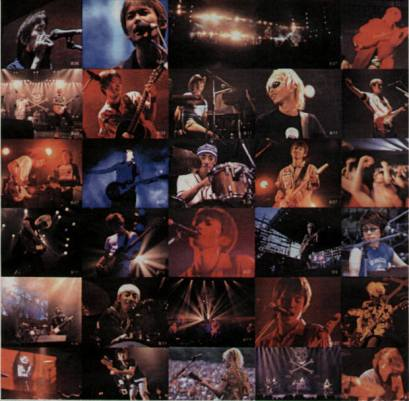

* S * P * I * T * Z *
11-20-08 After a year's break, the site is up again! Please note the new address.

Welcome Spitz fan or potential Spitz fan! This is my site that introduces
and provides English resources pertaining to this popular Japanese rock band,
including album information, lyric translations and guitar chords.
Single Wakaba was released 11/05/08
Introduction to Spitz
Spitz is a rock band that has earned itself a reputation and a solid fan following in Japan for music with catchy rhythms, beautiful vocals, and a nostalgic sort of atmosphere. What I like best about the music of Spitz are its great melodies, crafted by gifted songwriter Kusano Masamune. They are simply unbeatable. I also appreciate Spitz for being the most consistent band I've ever come across. After over ten years of making music their style has not changed significantly (I mean this in a good way) and IMO if there's any album by this band worth hearing, it's all of them!
I became acquainted with the music of Spitz while riding in a friend's car in Japan. Although I was already familiar with many mainstream Japanese artists of the day, I had no idea a band called Spitz existed.
After hearing for the first time songs such as Aoi Kuruma and Nagisa I was instantly hooked. They are still one of my very favorite artists today.
Included on this site are:
Profile
A very brief history of the band and its members.
Discography
A listing of material the band has put out.
Lyrics
English lyric translations of Spitz songs.
Guitar
Guitar chords and some tabs that I worked out.
Translation
This is a translation of the interview that comes with the album "Kachoufuugetsu".
Links
Many Spitz-related pages in English and Japanese.